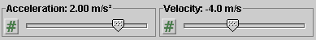
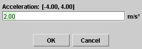
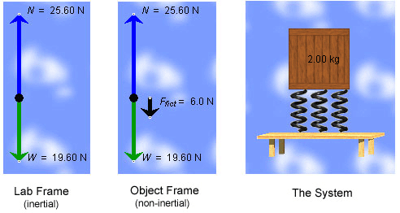

There are three basic control buttons. They are, from left to right:
-
 Rewind. Resets the simulation to the initial
position with the previously chosen initial values.
Rewind. Resets the simulation to the initial
position with the previously chosen initial values.
After clicking Rewind, click Play to restart the motion.
-
 Play/Pause. Starts the motion.
Play/Pause. Starts the motion.
After Play has been clicked, the button will change into the Pause button
 . Clicking Pause will freeze the
motion. To resume the motion, click Play once more.
. Clicking Pause will freeze the
motion. To resume the motion, click Play once more.
-
 Reset. Resets the applet to its default
setting.
Reset. Resets the applet to its default
setting.
Adjustments in the initial position and velocity can only be made after first clicking REWIND or RESET. However, the acceleration of the block-springs-table system can be adjusted during the motion.

By selecting one of the two radio buttons you can choose either
- a Lab Frame view in which the background remains at rest and the system consisting of table, springs, and block is moving
- or an Object Frame view in which the system remains at rest and the Lab-Frame background is moving.
The Lab Frame is an inertial frame, the Object Frame a non-inertial frame (if the acceleration is non-zero).
In the non-inertial Object Frame, there is a fictitious
force in addition to the two real forces (normal and
gravitational) that exist equally in both frames. This
fictitious force is displayed as a black vector in the
free-body diagram when the Object Frame mode is
selected. Also, when in this mode, the acceleration vector
displayed by the applet is not the acceleration of the block
in this frame, which is zero, but the acceleration  of the
Object Frame relative to the Lab Frame.
of the
Object Frame relative to the Lab Frame.

There are two sliders for adjusting the following variables. Both variables are scalar components relative to a y-axis that points vertically upward.
- Acceleration: y-component of acceleration of the block-springs-table system in the range from -4.00 m/s2 to 4.00 m/s2 in steps of 0.01 m/s2.
- Velocity: y-component of velocity of the block-springs-table system in the range from -20.0 m/s to 20.0 m/s in steps of 0.1 m/s.
Clicking on a slider to the left or right of the slider tab allows fine adjustment of the slider setting.
Clicking on the Input Dialog button  of
a slider opens a dialog for entering an exact value for the
slider setting. The dialog for the Acceleration slider is
illustrated below. The range in which values can be entered,
from -4.00 m/s2 to 4.00 m/s2 in this
case, is indicated above the data entry field.
of
a slider opens a dialog for entering an exact value for the
slider setting. The dialog for the Acceleration slider is
illustrated below. The range in which values can be entered,
from -4.00 m/s2 to 4.00 m/s2 in this
case, is indicated above the data entry field.

The Acceleration slider remains active during the motion and can be used to change the acceleration while the motion is in progress. While the slider is not being adjusted, the acceleration is constant.
If the applet is in the Lab Frame mode, the acceleration set
by the slider is the (y-component of the)
acceleration  of the system (table-springs-block) relative to the Lab
frame. If the applet is in the Object Frame mode, the
acceleration set by the slider is the (y-component of
the) acceleration of the Object Frame relative to the Lab
Frame.
of the system (table-springs-block) relative to the Lab
frame. If the applet is in the Object Frame mode, the
acceleration set by the slider is the (y-component of
the) acceleration of the Object Frame relative to the Lab
Frame.
The Velocity slider can be used to set the (y-component of the) initial velocity of the system relative to the Lab frame. The slider is inactive during the motion so that its setting cannot be changed during the motion or when the motion is paused. Nevertheless, it displays the instantaneous velocity of the system relative to the Lab frame at all times. It does this both in the Lab Frame or Object Frame modes.
Comment. Since the system is always at rest relative to the Object frame, by definition of the Object frame, the velocity of the system relative to the Lab frame is equal to the velocity of the Object frame relative to the Lab frame.

The red needle displays the system's speed relative to the Lab Frame, or the speed of the Object Frame relative to the Lab frame, depending on which frame is selected.
Comment. The values shown by the speedometer are always positive or zero, because of the definition of speed. In constrast, both positive and negative values are shown by the Velocity slider because the y-component of the velocity can be either positive or negative.
The acceleration vector set by the Acceleration slider is
represented by an orange arrow near the right edge of the
applet window. The vector is labeled or depending on whether the
applet is in the Lab Frame or Object Frame mode,
respectively.
When the acceleration is zero, the acceleration is
represented by an orange dot, labeled = 0 or = 0,
depending on the mode.

In the Lab Frame mode, the free-body diagram for the block (left image) shows the two (real) forces acting on the block: the gravitational force of magnitude W exerted by the earth on the block and the normal force of magnitude N exerted by the springs on the block. The gravitational force stays the same no matter how the system is adjusted, but the normal force depends on the block's acceleration, but not on its velocity.
In the Object Frame mode, the free-body diagram (middle
image) shows the fictitious force (in black) that exists
only in this non-inertial frame, in addition to the same two
real forces as in the Lab Frame. The vector sum of these
three forces, including the fictitious force, is equal to
zero, because the system's acceleration ' relative to the Object Frame
is equal to zero.
Initially or upon Reset or Rewind, the system's initial position can be adjusted upward or downward by clicking on either the table, springs, or block with the mouse and dragging.
In the top left corner of the applet window, the time elapsed since the beginning of the motion is displayed in seconds.